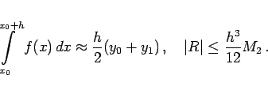
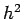
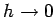
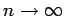

Inhalt Index DeskTop Bronstein

 Numerische Mathematik Numerische Integration Interpolationsquadraturen
Numerische Mathematik Numerische Integration Interpolationsquadraturen


Im Intervall [x0,x0+h] wird f(x) durch ein Polynom 1. Grades ersetzt, das f(x) an den Stützstellen x0 und x1 = x0+h interpoliert. Man erhält:
|  | (19.75) |
Durch Summation ergibt sich die sogenannte zusammengesetzte Trapezformel oder Trapezsumme:
Mit M2 wird eine für den gesamten Bereich der Stützstellen gültige obere Schranke für | f''(x) | bezeichnet.
Der Fehler der Trapezsumme verhält sich wie , d.h., die Trapezsumme hat die Fehlerordnung 2. Daraus folgt für  (also ) ihre Konvergenz gegen das bestimmte Integral, wenn Rundungsfehler nicht berücksichtigt werden.